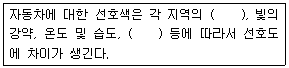
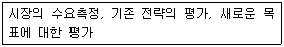
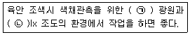
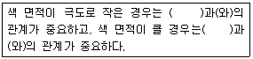
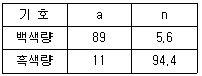
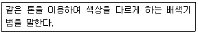

컬러리스트기사 (2015-08-16 기출문제)
1과목: 색채심리 마케팅
1. 마케팅 기법 중 시장을 상이한 제품을 필요로 하는 독특한 구매집단으로 분할하는 방법을 무엇이라 하는가?
- 시장 표적화
- 시장 세분화
- 대량 마케팅
- 마케팅 믹스
(정답률: 75%)

2. 사회ㆍ문화 정보의 색으로서 색채정보의 활용사례가 잘못 연결된 것은?
- 동양 : 신성시 되는 종교색 - 노랑
- 중국 : 왕권을 대표하는 색 - 노랑
- 북유럽 : 영환과 자연의 풍요로움 - 녹색
- 서양 : 평화, 진실, 협동 - 하양
(정답률: 36%)
3. 마케팅 믹스에 대한 설명이 틀린 것은?
- 제품에 대한 수요에 영향을 주기 위해 기업이 시장에서 자극요소로 활용할 수 있는 모든 수단을 활용하는 것이다.
- 마케팅의 4P는 마케팅 믹스의 기본적 요소이다.
- 마케팅의 4P는 제품(product), 가격(price), 구매(purchase), 유통구조(place)이다.
- 감성적, 경험적 마케팅 등은 창의적인 마케팅 믹스를 개발하기 위한 방법이다.
(정답률: 63%)
4. 일반적으로 인지되는 민족 상징색의 연결이 틀린 것은?
- 영국 - 군청색
- 인도 - 빨강
- 프랑스 - 파랑
- 일본 - 노랑
(정답률: 81%)
5. 색채의 정서적 반응의 특징을 옳게 설명한 것은?
- 색채경험은 빛의 물리적 특성이 같다할지라도 경험이나 환경에 따라 다르게 느껴진다.
- 색채의 물리적 특성은 동일하므로 심리적인 변화와는 상관없이 늘 동일한 색으로 인지된다.
- 색채는 항상 객관성을 유지하는 특성을 가졌기에 색채의 효과는 주관적 해석과는 상관이 없다.
- 색채를 통한 마케팅은 전혀 고려하지 않아도 될 만큼 색채에 따른 경험과 마케팅의 상관관계는 없다.
(정답률: 89%)
6. 다음 유행색에 대한 설명 중 옳은 것은?
- 패션이나 미용디자인에 사용되는 색 영역은 비교적 느리게 변한다.
- 당시의 특정한 정치ㆍ경제적인 사건의 영향을 가장 많이 받는다.
- 국제 유행색 협회에서 매년 그 해의 색채방향을 분석하고 유행색을 예측한다.
- 어떤 계절이나 일정기간 동안 특별히 많은 사람들이 선호하여 착용한 색을 일컫기도 한다.
(정답률: 58%)
7. 소비자 생활유형 측정법의 하나로 심리도법이라고도 하며, 소비자를 일원적으로 파악하지 않고 생활 유형을 활동, 흥미, 의견으로 구분하여 측정하는 방법은?
- VALS 측정법
- AIO 법
- 삼차원적 측정법
- 4P 측정법
(정답률: 70%)
8. 기업색채에 대한 설명으로 틀린 것은?
- 자사 브랜드의 이미지를 확실하게 인식시킬 수 있는 색채
- 기업의 독특한 이미지를 살리기 위한 고명도, 고채도의 색채
- 여러 가지 소재로 응용할 수 있으며 관리하기 쉬운 색채
- 눈에 띄기 쉽고 경쟁업체와의 차별성이 뛰어난 색채
(정답률: 79%)
9. 지역에 따른 자동차에 대한 선호색의 차이를 설명한 다음 내용 중 괄호 속에 들어갈 내용으로 가장 적절한 것은?

- 자연환경, 생활패턴
- 자연기후, 소비형태
- 도시형태, 선택연령
- 개인기호, 기술수준
(정답률: 55%)
10. 색채마케팅 과정에서 색채기획단계에 해당하지 않는 것은?
- 소비자의 선호색 및 경향조사
- 타깃 설정
- 색채컨셉 및 이미지
- 색채포지셔닝 설정
(정답률: 47%)
11. 색채의 지각과 감정효과에 대한 설명 중 틀린 것은?
- 낮은 천장에 밝고 차가운 색을 칠하면 천장이 높아 보인다.
- 자동차의 겉 부분에 난색계통을 칠하면 눈에 잘띈다.
- 좁은 방 벽에 난색계통을 칠하면 넓어 보이게 할 수있다.
- 욕실과 화장실은 청결하고 편안한 느낌의 한색계통을 적용하는 것이 일반적이다.
(정답률: 67%)
12. 색채는 모든 문화권에서 종교, 신화, 전통의식 등에 색채를 상징적으로 활용한다. 적합하지 않는 것은?
- 힌두교와 불교에서 노랑은 신성화된 색채이다.
- 기독교와 천주교에서 하느님과 성모마리아를 파랑으로 연상한다.
- 서양문화에서 노랑은 봄과 새 생명의 탄생을 상징한다.
- 동양에서의 하양은 전통적으로 죽음의 색으로서 장례식을 대표하는 색이다.
(정답률: 47%)
13. 패션에서의 색채이미지에 관한 설명 중 올바른 것은?
- 색채는 패션 제품의 시각적인 미적 효과를 상승시키는 것은 물론 제품의 구매촉진 및 이미지를 형성하는 중요한 요소이다.
- 색채이미지는 다양성과 보편성을 지니며 배색보다 단색시에 더욱 뚜렷한 이미지를 전달한다.
- 색채이미지는 색의 1차원적 속성에 의해서만 형성된다.
- 색상과 명도, 채도의 복합 개념인 색조의 특성에 따라 미묘한 차이를 나타내 부정확한 이미지를 전달한다.
(정답률: 84%)
14. 현재는 특정욕구를 충족시켜주는 동일 카테고리의 타 제품을 사용하고 있지만 잘 관리하면 자가제품으로 전환이 가능한 구매자 그룹군은?
- 시장세분화 구매자
- 연령별 구매자
- 잠재적 구매자
- 고정 구매자
(정답률: 83%)
15. 색채와 연관된 인간의 반응을 연구하는 한 분야로 생리학, 예술, 디자인, 건축 등과 관계된 항목은?
- 색채 과학
- 색채 심리학
- 색채 인문학
- 색채 지리학
(정답률: 84%)
16. 마케팅 전략 수립 절차에서 다음에 해당하는 영역은?

- 상황분석
- 목표설정
- 전략수립
- 실행계획
(정답률: 38%)
17. 모집단 추출시 1차로 시ㆍ읍ㆍ면 등을 추출하고 다시 그 중에서 몇 세대를 추출하면서 접근하는 방법은?
- 계통추출법
- 무작위추출법
- 다단추출법
- 국화추출법
(정답률: 76%)
18. 빛의 분광을 통해 발견된 일곱가지 색을 칠음계에 연계시키면서 색채와 소리의 관련성을 설명한 사람은?
- 뉴턴
- 요하네스 이텐
- 먼셀
- 램버트
(정답률: 65%)
19. 색채 설계 조사 과정에서 서로 어울리지 않는 것은?
- 제품 색채 컨셉의 개발 - 신제품 색채의 입안
- 색채 디자인 - 모형 작성
- 마케팅 믹스 - 마케팅의 계획
- 모형 작성 - 제품 색채의 세분화
(정답률: 38%)
20. 제품수명주기 중 단위당 이익은 안정되나 경쟁의 증가로 총이익은 하강하기 시작하는 시기는?
- 성숙기
- 성장기
- 도입기
- 쇠퇴기
(정답률: 79%)
2과목: 색채디자인
21. '마찰하다'의 뜻으로 일명 탁본이라고 하며 요철이 있는 표면을 문질러 피사물의 질감효과를 나타내는 기법은?
- 프로타주
- 데칼코마니
- 콜라주
- 오브제
(정답률: 75%)
22. 자연계의 생물학적 원형들이 지니는 기본 생존 방식을 인공물의 디자인이나 인위적 환경 형성에 이용하는 디자인을 의미하는 것은?
- 바이오닉 디자인
- 산업 디자인
- 하이테크 디자인
- 토탈 디자인
(정답률: 66%)
23. 게슈탈트(Gestalt)의 원리 중 부분이 연결되지 않아도 완전하게 보려는 시각법칙은?
- 연속성 (contibuation)의 요인
- 근접성 (proximity)의 요인
- 유사성 (similarity)의 요인
- 폐쇄성 (closure)의 요인
(정답률: 65%)
24. 형태와 기능은 분리가 아닌 포괄적 의미로서의 복합기능이라고 규정한 사람은?
- 루이스 설리반
- 빅터 파파넥
- 윌리암 모리스
- 모홀리 나기
(정답률: 43%)
25. 3차원 디자인에 속하는 것은?
- 심벌 디자인
- 텍스타일 디자인
- 에디토리얼 디자인
- 윈도우 디스플레이
(정답률: 40%)
26. 1 : 4 : 7 : 10 : 13 : ... 과 같이 이웃하는 두 항의 차이가 일정한 수열에 의한 비례는?
- 정수비
- 상가 수열비
- 등비 수열비
- 등차 수열비
(정답률: 64%)
27. 병원의 신생아실을 위한 색채 기획 중 밝고 조용하고 부드러운 느낌을 주는 배색으로 가장 적절한 것은?
- 주조색 : 5Y 9/2, 보조색 : 2.5YR 8/3, 강조색 : 5B 5/2
- 주조색 : 5R 5/12, 보조색 : 2.5RP 8/3, 강조색 : 5PB 5/6
- 주조색 : 5G 3/4, 보조색 : 5G 9/2, 강조색 : 5Y 5/6
- 주조색 : 5P 6/5, 보조색 : 5P 8/3, 강조색 : 2.5YR 8/2
(정답률: 71%)
28. 색채계획 과정에서 색채변별능력, 색채조사능력, 자료수집능력은 어느 단계에서 요구되는가?
- 색채환경분석 단계
- 색채심리분석 단계
- 색채전달계획 단계
- 디자인 적용 단계
(정답률: 66%)
29. 에코 디자인의 특성이 아닌 것은?
- 환경파괴를 최소화하는 디자인
- 지속가능한 디자인의 선택
- 자연을 제일 우선으로 살리는 디자인
- 생태적 측면이 중요하며 문화적 측면은 고려대상이 아님
(정답률: 79%)
30. 공공환경에서 대상에 따른 색채적용 시 고려해야 할 조건이 아닌 것은?
- 대상과 보는 사람과의 거리
- 선호도
- 면적효과
- 공공성의 정도
(정답률: 44%)
31. 디자인을 구성하는 형태의 기본요소로 짝지어진 것은?
- 형, 색, 재질감, 빛
- 점, 선, 면, 입체
- 통일, 변화, 조화, 균형
- 유사, 대비, 균일, 강화
(정답률: 63%)
32. 디자인의 조형 원리에 관한 설명 중 틀린 것은?
- 지나친 통일성은 지루해지기 쉬우며, 지나친 변화는 산만해지기 쉽다.
- 시각적 율동감은 강한 좌우 대칭의 구도에서 쉽게 찾아간다.
- 부분과 부분 혹은 부분과 전체 사이에 안정적인 연관성이 보일 때 조화가 이루어진다.
- 부분과 부분 혹은 부분과 전체 사이에 시각적인 안정감이 보일 때 균형이 이루어진다.
(정답률: 79%)
33. 기업체나 단체 또는 일정 규모 이상의 행사에서 일관성 있게 색채를 종합적으로 활용하고 유지하려는 통합적 방법을 무엇이라고 하는가?
- 색채 조절
- 색채 관리
- 색채 전달
- 색채 배합
(정답률: 49%)
34. 로맨틱 패션이미지 연출과 관련이 없는 것은?
- 소녀적인 감성을 지향하고 부드러운 소재가 어울린다.
- 파스텔 톤의 분홍, 보라, 파랑을 주로 사용한다.
- 리본 장식이나 레이스를 이용하여 사랑스러운 분위기를 연출한다.
- 전체적인 분위기가 화려하고 우아한 이미지이므로 곡선보다는 직선 위주로 연출한다.
(정답률: 87%)
35. 실내 색채계획으로 가장 거리가 먼 것은?
- 벽의 아랫부분은 윗벽과 다른 색상으로 약간 밝은 것이 좋다.
- 천장은 아주 연한색이나 흰색이 좋다.
- 거실은 밝고 안정감 있는 고명도ㆍ저채도의 중성색을 사용한다.
- 벽은 온화하고 밝은 한색계가 눈을 편하게 한다.
(정답률: 69%)
36. 19세기 후반 영국에서 시작되어 수공예적 생산을 주장하고, 근대 디자인에 영향을 준 디자인 사조는?
- 모더니즘
- 아르누보
- 미술공예운동
- 독일공작연맹
(정답률: 65%)
37. 신문광고 디자인의 특징에 해당되지 않는 것은?
- 독자에게 직접 전달되므로 구독자의 수와 독자층이 안정되어 있다.
- 광고의 수명이 짧고 독자의 계층을 선택하기 어렵다.
- 광고주의 계획에 따라 광고의 집행이 가능하다.
- 상호 커뮤니케이션 형태로 정보를 전달한다.
(정답률: 65%)
38. 바우하우스에 대한 설명으로 틀린 것은?
- 1917년 요하네스 잇텐이 설립한 독일의 조형학교이다.
- 독일공작연맹의 이념을 계승하여 예술적 창작과 공학기술의 통합을 목표로 하였다.
- 합목적이며 간단한 기본주의를 추구하는 조형에 기초하여 장식을 배제하였다.
- 완벽한 건축물이 모든 시각예술의 궁극적 목표라고 선언하였다.
(정답률: 61%)
39. 인쇄물에서 핀트가 잘 맞지 않았을 때 일어나는 눈의 아른거림 현상은?
- 실루엣 (silhouette)
- 무아레 (moire)
- 패턴 (pattern)
- 착시 (optical illusion)
(정답률: 56%)
40. 색채계획 및 디자인 프로세스 순서 중 색채계획ㆍ설계 단계에서 실시되는 것은?
- 시장 조사, 소비자 조사
- 시제품 제작
- 현장 적용색 검토 및 승인
- 주조색, 보조색, 강조색의 결정
(정답률: 38%)
3과목: 색채관리
41. 시각에 의한 색측정에 대한 설명으로 틀린 것은?(관련 규정 개정전 문제로 여기서는 기존 정답인 2번을 누르면 정답 처리됩니다. 자세한 내용은 해설을 참고하세요.)
- 광원, 관측자의 심리적 상태, 측정방식에 따라 달라질 수 있다.
- 비교 표준색은 10년 이내 것을 사용한다.
- 색측정의 기준이 도는 광원으로 CIE 표준광원 C와 D65를 사용한다.
- 시료의 배경은 일반적응로 무광택에 L*=50인 중간 밝기의 무채색이 적합하다.
(정답률: 50%)
42. 컴퓨터 자동배색의 특징이 아닌 것은?
- 스펙트럼 데이터를 이용하여 아이소머리즘을 실현할 수 있다.
- 최소 컬러런트 구성과 조합을 찾아 효율성을 높일 수있다.
- 작업자의 감정이나 환경에 기인한 측색 오차의 영향을 최소화할 수 있다.
- 자동배색에 혼입되는 각종요인에서도 색채가 변하지 않으므로 발색공정관리가 쉽다.
(정답률: 46%)
43. 육안검색의 조건이 아닌 것은?
- 높은 채도의 색 검사 후 낮은 채도의 색을 검사한다.
- 측정광원은 일반적으로 D65광원을 기준으로 한다.
- 환경색의 영향을 받지 않는 조건을 만든다.
- 시료면과 표준면은 서로 인접하게 배치하거나 사이를 두고 나열한다.
(정답률: 54%)
44. 안료의 일반적인 특성에 대한 설명 중 옳은 것은?
- 물에 잘 녹으며 매질 내에 입자로 분포한다.
- 유기 안료가 대부분을 차지한다.
- 대체로 불투명한 성질을 가지고 있다.
- 물체와의 친화력이 있어 접착제가 따로 필요없다.
(정답률: 66%)
45. 색채측정에 관한 조명 및 관측조건(geometry)에 대한 설명으로 옳은 것은?
- CIE에서는 광택이 포함되지 않도록 하는 조명 및 관측조건을 추천하였다.
- 표면이 매끄러워서 광택이 있는 재질의 경우 조명 및 관측조건에 따라 측정결과가 달라진다.
- CIE에서 추천한 조명 및 관측조건은 45/0, 0/45, 0/d, d/d, d/0의 5가지가 있다.
- 조명 및 관측조건은 분광식 색체계에만 적용된다.
(정답률: 49%)
46. 가소성 물질이며 광택이 좋고 다양한 색채를 낼 수 있도록 착색이 가능하며, 투명도가 높고 굴절률이 유리보다 낮은 소재는?
- 플라스틱
- 금속
- 천연섬유
- 알루미늄
(정답률: 75%)
47. 컬러 프린터의 색재현을 설명한 것으로 틀린 것은?
- 검정(K)잉크는 보다 정확한 색 및 경제적인 목적으로 사용한다.
- 기본적으로 Cyan, Magenta, Yellow 잉크를 원색으로 사용한다.
- 일반적으로 프린터 출력물의 색역은 디스플레이 화면의 색역과 일치한다.
- 프린터의 해상도는 dpi 단위로 측정된다.
(정답률: 66%)
48. 염료에 대한 설명이 틀린 것은?
- 천연염료는 동물염료, 광물염료, 식물염료 등이 있다.
- 합성염료의 색상은 천연염료에 비해 제한적이다.
- 식용염료는 식품, 의약품, 화장품 등의 착색에 사용한다.
- 형광염료는 형광을 발하는 염료이다.
(정답률: 80%)
49. 디지털 컬러 시스템에 대한 설명 중 틀린 것은?
- RGB 형식은 컴퓨터 모니터와 스크린 같이 빛의 원리로 색채를 구현하는 장치에서 사용된다.
- 컴퓨터 그래픽스 작업이 프린트물로 나온다는 것은 CMYK 색조합에 의한 결과물이다.
- HSB 시스템에서의 색상은 일반적 색체계에서 360° 단계로 표현된다.
- Lab 시스템은 물감의 여러 색을 혼합하고 다시 여기에 흰색이나 검정을 섞어 색을 만드는 전통적 혼합방식과 유사하다.
(정답률: 66%)
50. 다음 중 색온도가 가장 낮은 것은?
- 주광색 형광등
- 3000K의 백열등
- 맑은 날 정오의 태양
- 흐린 날 정오의 하늘
(정답률: 33%)
51. 조색 방법에 대한 설명으로 틀린 것은?
- 고명도 색채 조색시 극히 소량으로도 색채에 많은 영향을 줄 수 있으므로 유의하여야 한다.
- 메탈릭이나 펄의 입자가 함유된 조색에는 금속입자나 펄입자에 따라 표면반사가 일정하지 못하다.
- 형광성이 있는 색채 조색시 분광분포가 유사한 Xe(크세논) 램프로 조명하여 측정한다.
- 채도가 높은 색채를 관측하다가 새로운 색채를 관측하면 시감의 색상이 안정적이다.
(정답률: 70%)
52. 색료가 선택되면 그 색료를 배합하여 조색할 수 있는 색채의 범위가 정해진다. 색영역은 이론적인 것으로부터 현실적인 단계로 내려올수록 점점 축소되는데, 다음 중 색영역을 축소시키는 것과 관련이 없는 것은?
- 주어진 명도에서 가능한 색영역
- 표면반사에 의한 어두운 색의 한계
- 경제성에 의한 한계
- 시간경과에 따른 탈색현상
(정답률: 45%)
53. 육안조색 시 발생할 수 있는 메타메리즘으로 인한 이색을 방지하기 위해서 취해야 할 사항으로 옳은 것은?
- 믹서로 섞여진 도료를 완전히 섞어준 후 태양광하에서만 조색해야 한다.
- 결과의 검사는 반드시 3인 이하로 제한한다.
- 육안조색이므로 도료를 믹서로 섞어서는 안되며, 어플리케이터를 활용해 샘플색을 가능한 두껍게 칠한다.
- 표준광원이 필요하며 기준 조색 광원을 명기한다.
(정답률: 75%)
54. 다음 전자장비 중 사용하는 색체계가 일반적으로 다른 것은?
- 디지털 카메라
- 스캐너
- 컴퓨터 모니터
- 컬러 프린터
(정답률: 61%)
55. 분광식 색채계에 대한 설명으로 틀린 것은?
- 삼자극치를 측정한 후 연산하여 조명 및 광원의 색온도, 조도를 측정한다.
- 색채시료의 분광 반사율을 측정하여 색채를 관리한다.
- 단파장 반사율을 측정한 뒤 결과 값은 별도의 계산에 따라 삼자극치로 변환할 수 있다.
- 분광소자는 일반적으로 회절격자나 프리즘을 사용한다.
(정답률: 29%)
56. 'R(λ) = S(λ) x B(λ) x W(λ)'는 절대분광반사율의 계산식이다. 각각의 의미가 틀린 것은?
- R(λ) = 시료의 절대분광반사율
- S(λ) = 시료의 측정 시그널
- B(λ) = 흑색표준의 절대분광반사율 값
- W(λ) = 백색표준의 절대분광반사율 값
(정답률: 23%)
57. 다음 ( )안에 들어갈 적합한 것은?

- ㉠ : D65 ㉡ : 1000
- ㉠ : D65 ㉡ : 200
- ㉠ : D35 ㉡ : 1500
- ㉠ : D15 ㉡ : 100
(정답률: 83%)
58. 상점에 진열되어 있는 물건을 구매하였으나 상점 밖에서 보니 물건의 색이 달라 보였다. 이 경우 광원의 어떤 특성 때문에 달라 보이는가?
- 광속
- 분광분포
- 광도
- 소비전력량
(정답률: 69%)
59. 도료를 구성하는 요소에 해당되지 않는 것은?
- 안료(Pigment)
- 수지(Resin)
- 염료(Dye)
- 용제(Solvent)
(정답률: 40%)
60. 모니터의 색온도에 대한 내용이 아닌 것은?
- 6500K와 9300K의 두 종류 중에서 사용자가 임의로 색온도를 설정할 수 있다.
- 색온도의 단위는 K(Kelvin)를 사용한다.
- 자연에 가까운 색을 구현하기 위해서는 색온도를 6500K로 설정하는 것이 바람직하다.
- 색온도가 9300K로 설정된 모니터의 화면에서는 적색조를 띠게 된다.
(정답률: 65%)
4과목: 색채지각론
61. 감법혼색을 응용하는 것이 아닌 것은?
- 컬러 TV
- 컬러 슬라이드
- 컬러 영화필름
- 컬러 인화사진
(정답률: 71%)
62. 명도가 다른 두 회색 사이의 색차를 가장 잘 보이게 하는 배경색은?
- 두 색보다 어두운 유채색
- 두 색의 중간에 위치하는 무채색
- 두 색보다 어두운 무채색
- 두 색보다 밝은 유채색
(정답률: 39%)
63. 고층 아파트 건물의 외벽 색채를 선택하는데 있어서 유의해야 할 점에 대한 설명 중 틀린 것은?
- 작은 샘플의 색채보다 실제로 칠해진 색채는 더욱 밝게 보인다.
- 실제로 칠해진 색채는 작은 샘플의 색채보다 훨씬 저채도로 느껴진다.
- 면적대비의 원리가 적용된다.
- 아파트 주변환경에 따라 명도나 채도 모두 다르게 느껴질 수 있다.
(정답률: 68%)
64. 색의 온도감에 관한 설명 중 올바른 것은?
- 귤색은 난색에 속한다.
- 연두색은 한색에 속한다.
- 바다색은 중성색에 속한다.
- 자주색은 난색에 속한다.
(정답률: 74%)
65. 눈에 대한 설명 중 틀린 것은?
- 외부에서 들어오는 빛의 양을 조절하는 구실을 하는 것은 홍채이다.
- 수정체는 빛을 굴절시킴으로써 망막에 선명한 상이 맺도록 한다.
- 망막의 중심부에는 간상체만 있다.
- 빛에 대한 감각은 광수용기 세포의 반응에서 시작된다.
(정답률: 57%)
66. 컬러 인쇄의 3색 분해를 할 때 컬러필름의 색들을 3색 필터를 이용하여 색 분해하는 것은 어떤 원리를 이용한 것인가?
- 가법혼색
- 감법혼색
- 보색
- 병치혼색
(정답률: 19%)
67. 지하철 안내 표지판 색채 디자인 시 중점적으로 생각해야 할 색채의 감정 효과와 거리가 먼 것은?
- 주목성
- 명시성
- 온도감
- 진출 ㆍ 후퇴의 색
(정답률: 75%)
68. 19세기 인상파의 점묘 병치혼색에서 주로 사용한 방법으로 생생한 색채감을 느끼게 하는 대비는?
- 보색대비
- 면적대비
- 명도대비
- 채도대비
(정답률: 35%)
69. 색의 지각과 감정효과에 대한 설명으로 옳은 것은?
- 멀리보이는 경치는 가까운 경치보다 푸르게 느껴진다.
- 크기와 형태가 같은 물체가 물체색에 따라 진출 또는 후퇴되어 보이는 것에는 채도의 영향이 가장 크다.
- 주황색 원피스가 청록색 원피스보다 더 날씬해 보인다.
- 색채의 세 가지 속성 중 감정효과는 주로 명도의 영향을 가장 많이 받는다.
(정답률: 46%)
70. 병치혼합에 관한 설명 중 틀린 것은?
- 감법혼색의 일종이다.
- 점묘법을 이용한 인상파 화가의 그림에서 볼 수 있는 색혼합 방법이다.
- 비잔틴 미술에서 보여지는 모자이크 벽화에서 볼 수 있는 색혼합 방법이다.
- 두 색의 중간적 색채를 보게 된다.
(정답률: 57%)
71. 순응에 대한 설명이 틀린 것은?
- 순응이란 조명조건이 변화함에 따라 수용기의 민감도가 변화하는 것은 말한다.
- 터널 내 조명설치 간격은 명암순응현상과 관련이 있다.
- 조도가 낮아지면 시인도는 장파장인 노랑보다 단파장인 파랑이 높아진다.
- 박명시는 추상체가 활동하고 있는 시각상태로 시각적인 정확성이 높다.
(정답률: 66%)
72. 인간이 볼 수 있는 가시광선의 파장 범위로 가장 근접한 것은?
- 390~860 nm
- 380~780 nm
- 280~790 nm
- 375~700 nm
(정답률: 78%)
73. 부드러운 느낌을 주고자 한다면 선택해야 할 의상 색채의 조건은?
- 채도는 낮으나 밝은 난색계열의 색
- 명도와 채도가 모두 낮은 난색계열의 색
- 채도가 높은 한색계열의 색
- 선명하나 어두운 한색계열의 색
(정답률: 75%)
74. 명소시와 암소시 각각의 최대 시감도는?
- 명소시 355nm, 암소시 307nm
- 명소시 455nm, 암소시 407nm
- 명소시 555nm, 암소시 507nm
- 명소시 655nm, 암소시 607nm
(정답률: 70%)
75. 명시도가 가장 높은 배색은?
- 검정과 빨강의 배색
- 검정과 흰색의 배색
- 검정과 노랑의 배색
- 검정과 주황의 배색
(정답률: 74%)
76. 잔상(after image)에 대한 설명으로 틀린 것은?
- 잔상의 출현은 원래 자극의 세기, 관찰시간, 크기에' 의존한다.
- 원래의 자극과 색이나 밝기가 반대로 나타나는 것은' 음성잔상이다.
- 보색잔상은 색이 선명하지 않고 질감도 달라 면색(面色)처럼 지각된다.
- 잔상 현상 중 보색잔상에 의해 보게 되는 보색을 물리보색이라고 한다.
(정답률: 47%)
77. 회색에 순색을 혼합하면 무엇이 주로 변화되는가?
- 명도가 낮아진다.
- 채도가 높아진다.
- 명도가 높아진다.
- 채도가 낮아진다.
(정답률: 63%)
78. 한 가지 계통의 색에서 채도가 가장 높은 것은?
- 혼색
- 단색
- 순색
- 명색
(정답률: 80%)
79. 면적대비의 효과에 대한 ( ) 속에 들어갈 색의 속성을 순서대로 옳게 나열한 것은?

- 명도, 색상
- 색상, 채도
- 채도, 색상
- 명도, 채도
(정답률: 28%)
80. 다음 중 공간색이란?
- 맑고 푸른 하늘과 같이 끝없이 들어갈 수 있게 보이는 색
- 유리나 물의 색 등 일정한 부피가 쌓였을 때 보이는 색
- 전구나 불꽃처럼 발광을 통해 보이는 색
- 반사물체의 표면에 보이는 색
(정답률: 60%)
5과목: 색채체계론
81. NCS 표기법에서 S3060-Y10R의 설명 중 틀린 것은?
- S는 순수도를 표시한다.
- 30%의 검정색도를 가지고 있다.
- 60%의 유채색도를 가지고 있다.
- 10%의 빨간색도를 가진 노란색이다.
(정답률: 56%)
82. 색의 속성에 대한 설명으로 틀린 것은?
- 색의 3속성을 3차원적인 공간에다 계통적으로 배열한 것이 색입체이다.
- 채도는 색의 밝기로 나눌 때의 요소가 되는 분광반사율에 의해서 느낀다.
- 색의 3속성은 색상, 명도, 채도이다.
- 색상은 색의 종류로 나눌 때의 요소가 되는 주파장에 의해서 느낀다.
(정답률: 56%)
83. ISCC-NBS의 색상분류에서 가장 선명한 색을 나타내는 톤은?
- vivid
- bright
- light
- strong
(정답률: 90%)
84. 먼셀 표색계의 설명으로 틀린 것은?
- 이상적인 완전한 검정과 흰색은 현실적으로 얻을 수 없으며, 명도 번호가 클수록 명도는 낮고 작을수록 명도는 높다.
- 실용상 현재 쓰이고 있는 먼셀 색상환은 기본 10색상을 2등분, 4등분한 20색상, 40색상의 색상환이다.
- Value는 명도축으로 0에서 10까지의 단계를 사용하고 있다.
- Chroma는 중심의 무채색 축을 0으로 하고 수평방향으로 차례로 번호가 커지게 된다.
(정답률: 45%)
85. 우리의 음양오행사상에 의한 색체계는 오방정색과 오방간색으로 분류하는데 다음 중 오방간색이 아닌것은?
- 청색
- 홍색
- 유황색
- 자색
(정답률: 44%)
86. 비렌의 색채조화론 중 옳은 것은?
- 총 9개의 톤으로 이루어져 있다.
- 각 기준이 되는 톤을 직선으로 연결하면 조화롭다.
- 색상의 변화에 대해서는 다루고 있지 않다.
- 실질적인 업무보다는 이론과 설문조사를 위한 것이다.
(정답률: 70%)
87. 먼셀 색체계의 기본 10색상의 색명 중 틀린 것은?
- 주황 - YR
- 연두 - GY
- 청록 - PB
- 자주 - RP
(정답률: 71%)
88. 다음의 명도 표기 중 가장 밝은 색채는?
- N = 7
- L* = 65
- Y = 9.5
- D = 2
(정답률: 35%)
89. CIE LAB(L*a*b*) 색공간에 대한 설명으로 옳은 것은?
- L*a*b* 색공간에서 L*는 채도, a*와 b*는 색도좌표를 나타낸다.
- +a*는 빨간색 방향, +b*는 파란색 방향이다.
- 중앙은 유색이며, 중앙에서 바깥으로 가게되면 채도가 떨어진다.
- +a*는 빨간색 방향, -a*는 녹색방향이다.
(정답률: 87%)
90. 오스트발트 색체계의 표기법 “23 na"에 대하여 다음 표를 보고 옳게 설명한 것은?

- 23번 색상, 흑색량 94.4, 백색량 89, 순색량 5.6
- 23번 색상, 백색량 5.6, 흑색량 11, 순색량 83.4
- 순색량 23, 백색량 5.6, 흑색량 11
- 순색량 23, 흑색량 94.4, 백색량 89
(정답률: 52%)
91. 우리나라 청자를 상징하는 색 이름을 바르게 나타낸것은?
- 취색(翠色)
- 비색(翡色)
- 자색(紫色)
- 청색(靑色)
(정답률: 46%)
92. 오스트발트 색채체계의 특징이 아닌 것은?
- 24색상환을 사용한다.
- 각 순색으로부터 흰색, 검정색 방향으로 8개의 단계로 구성되어 있다.
- 무채색은 흰색, 검정색을 포함하여 10개의 단계로 구성되어 있다.
- 기본색은 2색을 기준으로 한다.
(정답률: 55%)
93. 5YR 4/8 에 가장 가까운 ISCC-NIST 색기호는?
- s-Br
- v-OY
- v-Y
- v-rO
(정답률: 32%)
94. PCCS 색상 기호 중 틀린 것은?
- bG, BG가 다른 색상으로 표기된다.
- 1~24 색상기호로도 표기된다.
- 단일 알파벳인 V, O 등도 사용된다.
- 규칙적으로 먼셀색상과 정확하게 대용된다.
(정답률: 68%)
95. 먼셀의 색채조화원리에 해당되지 않는 것은?
- 다양한 무채색의 평균명도가 N2가 될 때 조화로운 배색이 된다.
- 동일 색상의 색은 모두 조화된다.
- 어두운 색이나 채도가 낮은 색은 밝은 색이나 높은 채도의 색보다 넓게 사용한다.
- 항상 두 색의 조화로운 균형을 유지하며 배색해야 한다.
(정답률: 44%)
96. 먼셀의 색체계에 대한 설명 중 맞지 않은 것은?
- 모든 색을 채도, 명도, 색상의 세 가지 특징으로 나누어 분류한다.
- 전체 색상을 빨강(R), 파랑(B), 노랑(Y), 초록(G)의 네 가지 기본 원색으로 나누고 이를 다시 100개로 세분하여 분류한다.
- 기계적 측정에 의한 것이 아니라 사람의 시각적 판단을 바탕으로 하였으므로 색표간의 시감적 간격이 거의 균등하다.
- 먼셀의 'Munsell Book of Color'를 미국광학회가 측정, 검토, 수정하여 공식적으로 먼셀 표색계로 발표하였다.
(정답률: 53%)
97. Yxy 색체계에서 사람의 시감 차이와 실제 색표계의 차이가 가장 많이 나는 색상은?
- RED
- YELLOW
- GREEN
- BLUE
(정답률: 39%)
98. 다음의 관용색명 중 색명의 유래가 동물에서 따온 것은?
- 세피아(sepia)
- 밤색(maroon)
- 팬지색(pansy)
- 라벤더색(lavender)
(정답률: 75%)
99. 광원이나 빛의 색을 수치적으로 정량화하여 표시하는 색체계는?
- RAL
- NCS
- DIN
- CIE XYZ
(정답률: 68%)
100. <보기>에서 설명하는 배색방법은?

- 톤온톤(Tone on Tone) 배색
- 톤인톤(Tone in Tone) 배색
- 카마이외(Camaieu) 배색
- 트리콜로르(tricolore) 배색
(정답률: 47%)